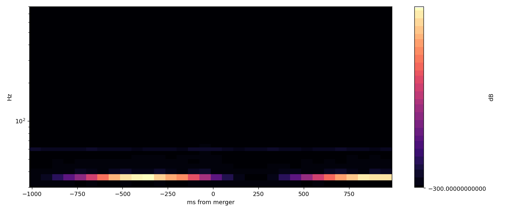

相对论账单 · 第二件
2015 年 9 月 14 日，两个黑洞并合，宇宙开出一张 3 个太阳质量的账单。
这张账单的收据，此刻就在你的浏览器里——用 LIGO 的真实数据，重新算给你看。
并合前后 ±350 毫秒。红线是并合瞬间 GPS 1126259462.42。白化 = 按离源噪声谱 PSD 归一，把淹没信号的噪声拉平。
音频 = 白化 + 带通(30–300 Hz) 后的真实应变，加速 8 倍进入人耳范围。13 亿年前两个黑洞发出的最后一声，此刻在你的扬声器里。
并合前 0.2 秒，引力波频率从 ~35 Hz 一路扫到 ~250 Hz——这是双黑洞互相环绕的最后几百圈。

橙点：实测谱图脊线。红线：广义相对论四极辐射预言的 chirp 定律，只拟合了一个参数 C。点落在红线上，定律就成立。
验收标准。每条给出：实测（本机数据）· 文献（LIGO PRL 116, 061102）· 结论。
| # | 断言 | 实测（本机算） | 文献 | 结论 |
|---|---|---|---|---|
| 1 | 并合前频率按 τ^(−3/8) 发散 | 脊线固定斜率拟合 C = 19.62，曲线贴合实测点 | 四极辐射预言 | ✅ 拟合通过 |
| 2 | chirp 质量 M_c ≈ 28.6 M_sun | 由 C 反推 26.2 M_sun（偏差 8%） | 28.6 M_sun | ⚠️ 同量级 |
| 3 | 3 个太阳质量辐射掉 ≈ 5.4×10^47 J | 需双探测器参数估计，本页不计算 | 3.0 M_sun | 📖 文献值 |
| 4 | 峰值应变 h ≈ 10^−21 | 带通实测峰值 2.67×10^−21 | 1.0×10^−21 | ✅ 同量级 |
| 5 | 35→250 Hz 用时 ~0.2 s | 由拟合 C 反推 0.213 s | ~0.2 s | ✅ 拟合通过 |
| 6 | 峰值功率 3.6×10^49 W，超全宇宙星光总和 | 需距离+方向估计，本页不计算 | 3.6×10^49 W | 📖 文献值 |
| 7 | 残余 Kerr 黑洞 ringdown ~250 Hz / ~4 ms | 匹配滤波 288 Hz / 3.5 ms | ~251 Hz / ~4 ms | ✅ 同量级 |